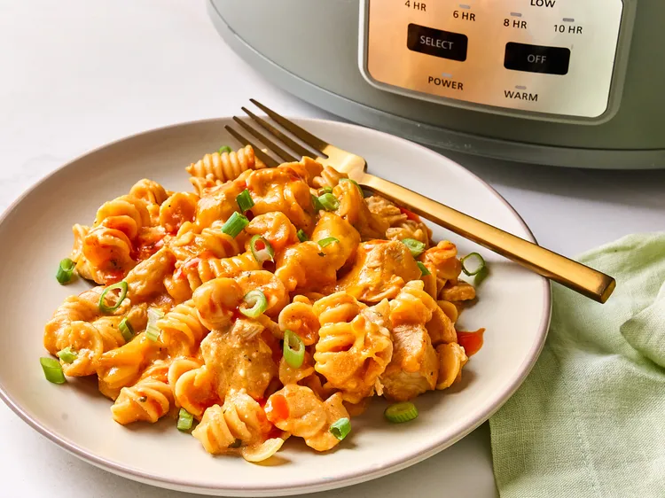

Buffalo Chicken Mac n cheese

What Is Buffalo Chicken Mac n cheese?
Buffalo chicken mac 'n cheese is a nice, spicy twist on macaroni and cheese, and the addition of chicken makes it a full meal.
Buffalo Chicken Mac n cheese Ingredients
- 2 pounds skinless, boneless chicken breasts
- 1 packet ranch seasoning
- 3 cups chicken bone broth
- 1 cup Buffalo sauce, plus more for serving
- 1 (14.5 ounce) package high protein pasta, such as Barilla® protein rotini
- 4 ounces cream cheese
- 2/3 cup cottage cheese
- 2 cups shredded Cheddar cheese divided
- 3 green onions, sliced
How to Make Buffalo Chicken Mac n cheese
- Place chicken breasts in the bottom of a slow cooker. Sprinkle with ranch seasoning; pour in chicken bone broth and Buffalo sauce.
- Cover and cook until chicken is cooked through and tender, on High for 2 1/2 hours, or Low for 4 to 5 hours.
- Remove chicken and chop, then return to the slow cooker. Set slow cooker to High.
- Add uncooked pasta, cream cheese, cottage cheese, and 1 1/2 cups Cheddar cheese. Stir to combine and cover.
- Cook on High until pasta is tender with a bite and creamy, about 30 minutes. Stir and top with remaining cheese. Cover and let stand for 10 minutes before serving.
- Sprinkle with green onions and drizzle with more Buffalo sauce.
Home